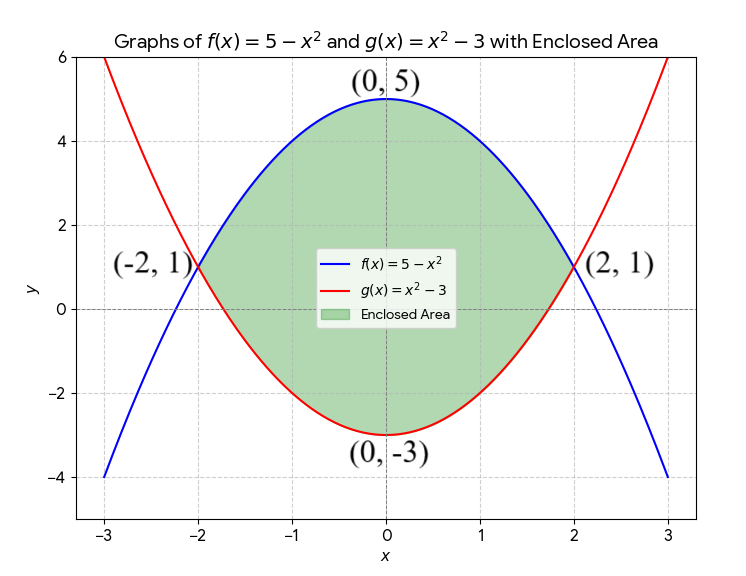
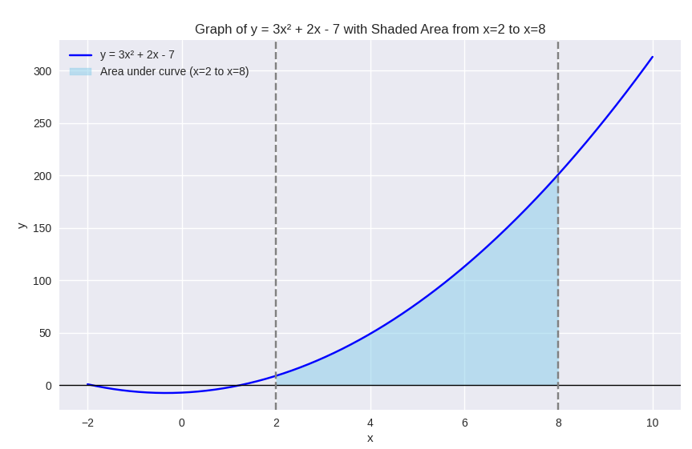

These are the solutions to Mathematics questions on Integral Calculus.
The TI-84 Plus CE shall be used for applicable questions.
If you find these resources valuable/helpful, please consider making a donation:
Your donation is appreciated.
Comments, ideas, areas of improvement, questions, and constructive
criticisms are welcome.
Feel free to contact me. Please be positive in your message.
I wish you the best.
Thank you.
$
\text{n is a positive constant} \\[3ex]
(1.)\:\: \displaystyle\int \ln x dx = x\ln x - x + C \\[7ex]
(2.)\:\: \displaystyle\int (\ln x)^n dx = x(\ln x)^n - n\displaystyle\int (\ln x)^{n - 1}dx \\[7ex]
(3.)\:\: \displaystyle\int \dfrac{dx}{x\ln x} = \ln|\ln x| + C \\[7ex]
(4.)\:\: \displaystyle\int x^n\ln x dx = \dfrac{x^{n + 1}[\ln x(n + 1) - 1]}{(n + 1)^2} + C \\[5ex]
$
Standard Integrals of Trigonometric Functions
$
(1.)\:\: \displaystyle\int \sin x dx = -cos x + C \\[7ex]
(2.)\:\: \displaystyle\int cos x dx = sin x + C \\[7ex]
(3.)\:\: \displaystyle\int \sec^2 x = \tan x + C \\[5ex]
$
Standard Integrals of Hyperbolic Functions
$
(1.)\:\: \displaystyle\int \sinh x dx = \cosh x + C \\[7ex]
(2.)\:\: \displaystyle\int \cosh x dx = \sinh x + C \\[5ex]
$
Standard Integrals of Rational Functions
$
\text{a, b, n are positive constants} \\[3ex]
(1.)\:\: \displaystyle\int \dfrac{1}{x} dx = \ln x + C \\[7ex]
(2.)\:\: \displaystyle\int \dfrac{1}{ax \pm b} dx = \dfrac{\ln|ax \pm b|}{a} + C \\[7ex]
(3.)\:\: \displaystyle\int \dfrac{1}{\sqrt{1 - x^2}} dx = \sin^{-1}x + C \\[7ex]
(4.)\:\: \displaystyle\int \dfrac{-1}{\sqrt{1 - x^2}} dx = \cos^{-1}x + C \\[7ex]
(5.)\:\: \displaystyle\int \dfrac{1}{1 + x^2} dx = \tan^{-1}x + C \\[7ex]
(6.)\:\: \displaystyle\int \dfrac{1}{\sqrt{x^2 + 1}} dx = \sinh^{-1}x + C \\[7ex]
(7.)\:\: \displaystyle\int \dfrac{1}{\sqrt{x^2 - 1}} dx = \cosh^{-1}x + C \\[7ex]
(8.)\:\: \displaystyle\int \dfrac{1}{1 - x^2} dx = \tanh^{-1}x + C \\[5ex]
$
Standard Integrals of Absolute Value Functions
$
\text{a, b, n are positive constants} \\[3ex]
(1.)\:\: \displaystyle\int |x| dx = \dfrac{x|x|}{2} + C \\[7ex]
(2.)\:\: \displaystyle\int |ax \pm b| dx = \dfrac{(ax \pm b)|ax \pm b|}{2a} + C \\[5ex]
$
Other Standard Integrals
$
\underline{\text{Algebraic Substitution}} \\[3ex]
(1.)\:\: \displaystyle\int f(x)f'(x) dx = \dfrac{f^2(x)}{2} + C \\[7ex]
(2.)\:\: \displaystyle\int \dfrac{f'(x)}{f(x)} dx = \ln f(x) + C \\[7ex]
(3.)\:\: \displaystyle\int \dfrac{-f'(x)}{f(x)} dx = -\ln f(x) + C \\[7ex]
\underline{\text{Trigonometric Substitution}} \\[3ex]
(4.)\;\; \displaystyle\int \dfrac{dx}{a^2 + x^2} = \dfrac{1}{a}\tan^{-1}\left(\dfrac{x}{a}\right) + C \\[7ex]
(5.)\;\; \displaystyle\int \dfrac{dx}{\sqrt{a^2 - x^2}} = \sin^{-1}\left(\dfrac{x}{a}\right) + C \\[7ex]
(6.)\;\; \displaystyle\int \sqrt{a^2 - x^2}dx = \dfrac{a^2}{2}\left[\sin^{-1}\left(\dfrac{x}{a}\right) +
\dfrac{x\sqrt{a^2 - x^2}}{a^2}\right] + C \\[7ex]
\underline{\text{Integration by Parts (Integration of Products)}} \\[3ex]
(7.)\;\; \displaystyle\int vdu = uv - \displaystyle\int udv \\[7ex]
\underline{\text{Hyperbolic Substitution}} \\[3ex]
(8.)\;\; \displaystyle\int \dfrac{dx}{\sqrt{a^2 + x^2}} = \sinh^{-1}\left(\dfrac{x}{a}\right) + C \\[7ex]
(9.)\;\; \displaystyle\int \dfrac{dx}{\sqrt{x^2 - a^2}} = \cosh^{-1}\left(\dfrac{x}{a}\right) + C \\[7ex]
\underline{\text{Integral Reflection Method}} \\[3ex]
\text{Also known as Symmetric Substitution OR Functional Transformation in Integration} \\[3ex]
\displaystyle\int_a^b \dfrac{f(x_1)}{f(x_1) + f(x_2)}dx \\[7ex]
Let\;\; a + b = \text{some constant},\;c \\[3ex]
\text{Set the substitution}:\;\; x = c - x \\[3ex]
\implies \\[3ex]
f(x) = \text{original function} \\[3ex]
f(c - x) = \text{transformed function} \\[3ex]
\text{Assume the original function and the transformed function complements each other} \\[3ex]
f(x) + f(c - x) = 1 \\[3ex]
Let\;\; I_1 = \displaystyle\int_a^b \dfrac{f(x_1)}{f(x_1) + f(x_2)}dx ...\text{integral of original function}
\\[7ex]
Let:\;\;I_2 = \displaystyle\int_a^b \dfrac{f(x_2)}{f(x_2) + f(x_1)}dx ...\text{integral of transformed function}
\\[7ex]
I_1 = I_2 = \text{the integral},\;I \\[4ex]
I_1 + I_2 = 2I \\[3ex]
$
Because we are integrating over the same limits and the variable, x is just being swapped with c
− x, the integral remains the same as long as the transformation preserves the total area under the
curve.
$
2I = \displaystyle\int_a^b 1 dx = [x]_a^b = b - a \\[5ex]
I = \dfrac{b - a}{2}
$
Theorems
(1.) The Fundamental Theorem of Calculus:
Assume:
a closed interval: $[c, d]$
a continuous function, $f$ defined on the interval
an antiderivative of the function, $F$ defined on the interval
then:
$\displaystyle\int_c^d f(x) dx = F(d) - F(c)$
(2.)
Applications
(1.) Economics
$
(a.) \\[3ex]
TC = \displaystyle\int MC(x) dx \\[5ex]
where \\[3ex]
x = \text{number of items} \\[3ex]
MC = \text{Marginal Cost function} \\[3ex]
TC = \text{Total Cost function} \\[3ex]
\text{constant of integration is the fixed cost} \\[5ex]
(b.) \\[3ex]
TR = \displaystyle\int MR(x) dx \\[5ex]
where \\[3ex]
x = \text{number of items} \\[3ex]
MR = \text{Marginal Revenue function} \\[3ex]
TR = \text{Total Revenue function} \\[3ex]
\text{constant of integration = 0 if no item is produced} \\[5ex]
(c.) \\[3ex]
NC = \displaystyle\int MPC(x) dx \\[5ex]
where \\[3ex]
x = \text{disposable national income} \\[3ex]
MPC = \text{marginal propensity to consume} \\[3ex]
NC = \text{national consumption function} \\[5ex]
$
(2.) Average Value of a Function
(3.) Trapezium Rule (or Trapezoidal Rule)
$
Given: \displaystyle\int_{c}^{d} f(x) dx \\[7ex]
(a.) \\[3ex]
\text{Definite Integral} = \dfrac{\Delta x}{2} [f(x_0) + 2f(x_1) + 2f(x_2) + 2f(x_3) + ... + 2f(x_{n - 1}) +
f(x_n)] \\[7ex]
\text{Definite Integral} = \dfrac{\Delta x}{2} [f(x_0) + f(x_n) + 2(f(x_1) + f(x_2) + f(x_3) + ... + f(x_{n -
1}))] \\[7ex]
where: \\[3ex]
c = \text{lower limit of integration} \\[3ex]
d = \text{upper limit of integration} \\[3ex]
\Delta x = \text{width of the interval} \\[3ex]
x_0, x_1, x_2, x_3, ..., x_{n - 1}, x_n \;\;\text{are the nodes (also referred to as ordinates)} \\[3ex]
f(x_0) \;\;and\;\; f(x_n) \;\;\text{are the function values at the endpoints} \\[3ex]
f(c), \; f(d), \; f(x_3), ..., f(x_{n - 1}) \;\;\text{are the function values at the intermediate points}
\\[3ex]
(b.) \\[3ex]
\Delta x = \dfrac{d - c}{n} \\[5ex]
\Delta x = \dfrac{d - c}{r - 1} \\[5ex]
(c.) \\[3ex]
n = r - 1 \\[3ex]
where: \\[3ex]
n = \text{number of intervals} \\[3ex]
r = \text{number of ordinates} \\[5ex]
$
$
\displaystyle\int_{2}^{4} \dfrac{\sqrt{\ln(9 - x)}}{\sqrt{\ln(9 - x)} + \sqrt{\ln(x + 3)}} dx
\text{ is of the form}: \;\;
\displaystyle\int_a^b \dfrac{f(x_1)}{f(x_1) + f(x_2)}dx \\[7ex]
$
So, we shall solve it by Functional Transformation in Integration
(3.) If $x f(x) = 3[f(x)]^2 + 2$, then $\displaystyle\int \dfrac{2x^2 - 12\cdot f(x) + f(x)}{[6f(x) - x][x^2 -
f(x)]^2} dx$ is equal to
$
(A.)\;\; \dfrac{1}{x^2 - f(x)} + C \\[5ex]
(B.)\;\; \dfrac{1}{x^2 + xf(x)} + C \\[5ex]
(C.)\;\; \dfrac{1}{[x - f(x)]^2} + C \\[5ex]
(D.)\;\; \dfrac{1}{[6f(x) - x]^2} + C \\[5ex]
$
This is not a straightforward integration problem
So, we need to see what we can do to simplify the integrand
Let us begin with the function we were given
Let us differentiate that function.
$
x f(x) = 3[f(x)]^2 + 2 \\[3ex]
\text{Differentiating the function implicitly, we have} \\[3ex]
xf'(x) + f(x)(1) = 3[f(x)f'(x) + f(x)f'(x)] + [f(x)]^2(0) + 0 \\[3ex]
xf'(x) + f(x) = 3[2f(x)f'(x)] \\[3ex]
xf'(x) + f(x) = 6f(x)f'(x) \\[3ex]
f(x) = 6f(x)f'(x) - xf'(x) \\[3ex]
f(x) = f'(x)[6f(x) - x] ...eqn.(1) \\[3ex]
$
We notice that this modified function is one of the denominators of the integrand.
So, we see some ray of hope in simplifying the integrand
Let us dive back to the numerator of the integrand
$
\underline{\text{Numerator of the integrand}} \\[3ex]
2x^2 - 12\cdot f(x) + f(x) \\[3ex]
2x[x - 6f(x)] + f(x) \\[3ex]
\text{Rewrite the first term; Substitute for the 2nd term from eqn.(1)} \\[3ex]
-2x[-x + 6f(x)] + f'(x)[6f(x) - x] \\[3ex]
-2x[6f(x) - x] + f'(x)[6f(x) - x] \\[3ex]
[6f(x) - x][-2x + f'(x)] \\[3ex]
[6f(x) - x][f'(x) - 2x] \\[3ex]
$
Okay, something can cancel out from the numerator and the denominator of the integrand
Let's continue
(c.) Check your answer for part (b.) using a method independent of the integration.
Make sure your notation clearly tells what you are doing.
C is the integration constant.
$
(a.) \\[3ex]
\text{Power Rule, Constant Multiple Rule and Logarithmic Integration Rule} \\[3ex]
\displaystyle\int x^3 + 3x^2 - 4x + 5 + \dfrac{2}{x} - \dfrac{3}{x^2} dx \\[5ex]
= \displaystyle\int x^3 + 3x^2 - 4x + 5 + 2x^{-1} - 3x^{-2} dx \\[5ex]
= \dfrac{x^4}{4} + \dfrac{3x^3}{3} - \dfrac{4x^2}{2} + 5x + 2\ln|x| - \dfrac{3x^{-1}}{-1} \\[5ex]
= \dfrac{x^4}{4} + x^3 - 2x^2 + 5x + 2\ln|x| + \dfrac{3}{x} + C \\[5ex]
(b.) \\[3ex]
\text{Integration by Algebraic Substitution} \\[3ex]
\displaystyle\int xe^{3x^2} dx \\[3ex]
\text{Let } p = 3x^2 \\[3ex]
\dfrac{dp}{dx} = 6x \\[5ex]
\dfrac{dx}{dp} = \dfrac{1}{6x} \\[5ex]
dx = \dfrac{dp}{6x} \\[5ex]
\implies \\[3ex]
\displaystyle\int xe^{p} * \dfrac{dp}{6x} \\[5ex]
= \dfrac{1}{6} \displaystyle\int e^p dp \\[5ex]
= \dfrac{e^p}{6} \\[5ex]
= \dfrac{e^{3x^2}}{6} + C \\[5ex]
$
(c.) When you integrate a function with respect to x
(in other words, when you integrate the integrand), the result is known as the antiderivative (or integral)
of the function with respect to x (wrt x).
When you differentiate the antiderivative wrt x, you get back the function.
So, let us differentiate the antiderivative of the function wrt x.
$
\text{Let } F(x) = \dfrac{e^{3x^2}}{6} \\[5ex]
F(x) = \dfrac{1}{6} * e^{3x^2} + C \\[5ex]
\text{Let } u = \dfrac{1}{6} \hspace{4em} v = e^{3x^2} \\[5ex]
................................................................. \\[3ex]
v = e^{3x^2} \\[3ex]
\text{Let }k = 3x^2 \hspace{2em}\implies \hspace{2em} v = e^k \\[3ex]
\dfrac{dk}{dx} = 6x \hspace{7em} \dfrac{dv}{dk} = e^k \\[5ex]
\dfrac{dv}{dx} = \dfrac{dv}{dk} * \dfrac{dk}{dx} ...\text{Function of a Function Rule} \\[5ex]
\dfrac{dv}{dx} = e^k * 6x \\[5ex]
\dfrac{dv}{dx} = 6xe^{3x^2} \\[5ex]
................................................................. \\[3ex]
\dfrac{du}{dx} = 0 \hspace{6em} \dfrac{dv}{dx} = 6xe^{3x^2} \\[5ex]
F'(x) = u\dfrac{dv}{dx} + v\dfrac{du}{dx} ...\text{Product Rule} \\[5ex]
F'(x) = \dfrac{1}{6} * 6xe^{3x^2} + e^{3x^2} * 0 \\[5ex]
f(x) = F'(x) = xe^{3x^2}...\text{This is the integrand in Part (b.)}
$
(6.) (a.) Graph $f(x) = 5 - x^2$ and $g(x) = x^2 - 3$, shading the area enclosed.
(b.) Find the area of the shaded region.
$
f(x) \text{ and } g(x) \text{ are quadratic functions} \\[3ex]
y = ax^2 + bx + c ...\text{Standard Form of a Quadratic Function} \\[3ex]
(a.) \\[3ex]
\underline{\text{Function}} \\[3ex]
f(x) = 5 - x^2 \\[3ex]
\underline{\text{Vertex}} \\[3ex]
f(x) = -x^2 + 0x + 5 \\[3ex]
a = -1 \\[3ex]
b = 0 \\[3ex]
c = 5 \\[3ex]
x-\text{coordinate of Vertex} = -\dfrac{b}{2a} = -\dfrac{0}{2(-1)} = 0 \\[5ex]
y-\text{coordinate of Vertex} = f(0) = 5 - 0^2 = 5 \\[3ex]
Vertex = (0, 5) \\[5ex]
\underline{\text{Intercepts}} \\[3ex]
0 = 5 - x^2 \\[3ex]
x^2 = 5 \\[3ex]
x = \pm\sqrt{5} \\[3ex]
x-intercepts = (-\sqrt{5}, 0) \text{ and } (\sqrt{5}, 0) \\[5ex]
f(0) = 5 \\[3ex]
y-intercept = (0, 5) \\[5ex]
\underline{\text{Function}} \\[3ex]
g(x) = x^2 - 3 \\[3ex]
\underline{\text{Vertex}} \\[3ex]
g(x) = x^2 + 0x - 3 \\[3ex]
a = 1 \\[3ex]
b = 0 \\[3ex]
c = -3 \\[3ex]
x-\text{coordinate of Vertex} = -\dfrac{b}{2a} = -\dfrac{0}{2(1)} = 0 \\[5ex]
y-\text{coordinate of Vertex} = g(0) = 0^2 - 3 = -3 \\[3ex]
Vertex = (0, -3) \\[5ex]
\underline{\text{Intercepts}} \\[3ex]
0 = x^2 - 3 \\[3ex]
x^2 = 3 \\[3ex]
x = \pm\sqrt{3} \\[3ex]
x-intercepts = (-\sqrt{3}, 0) \text{ and } (\sqrt{3}, 0) \\[5ex]
g(0) = -3 \\[3ex]
y-intercept = (0, -3) \\[5ex]
\underline{\text{Intersection of the Functions}} \\[3ex]
f(x) = g(x) \\[3ex]
5 - x^2 = x^2 - 3 \\[3ex]
5 + 3 = x^2 + x^2 \\[3ex]
2x^2 = 8 \\[3ex]
x^2 = \dfrac{8}{2} \\[5ex]
x^2 = 4 \\[3ex]
x = \pm\sqrt{4} \\[3ex]
x = \pm 2 \\[3ex]
f(-2) = 5 - (-2)^2 \\[3ex]
f(-2) = 5 - 4 \\[3ex]
f(-2) = 1 \\[3ex]
f(2) = 5 - 2^2 \\[3ex]
f(2) = 5 - 4 \\[3ex]
f(2) = 1 \\[3ex]
f(-2) = f(2) = g(-2) = g(2) = 1...\text{Graphs intersect at } -2 \text{ and } 2 \\[3ex]
\text{Points of Intersection are: } (-2, 1) \text{ and } (2, 1) \\[3ex]
$
The graphs of the functions are shown below:

To find the area of the shaded region in the graphs, let us find the function that is above the other
function within the points of intersection of the two graphs.
In the interval of the points of intersection, $[-2, 2]$, we can select 0 because $-2 \le 0 \le 2$
(8.) After a long study, tree scientists conclude that a eucalyptus tree will grow at the rate of
$0.6 + \dfrac{4}{(t + 1)^3}$ feet per year, where t is time in years.
Find the number of feet that the tree will grow in the third year.
$
\text{Growth rate function, } f(t) = 0.6 + \dfrac{4}{(t + 1)^3} \\[5ex]
\text{Total Growth} = \displaystyle\int f(t) dt = \displaystyle\int \left[0.6 + \dfrac{4}{(t + 1)^3}\right]
dt \\[5ex]
$
The total growth during the 3rd year is the growth that occurs at the end of the second year, t = 2
up to the end of the third year, t = 3.
(9.) Consider a function $y = 3x^2 + 2x - 7$
Calculate the area enclosed by the function, the function, the x-axis and the vertical lines $a = 2$
and $b = 8$
Because $a = 2$ and $b = 8$ are vertical lines, we can say that $x = 2$ and $x = 8$ 1st: Let us calculate the roots of the function to determine their position relative to the bounds,
$x = 2$ and $x = 8$
$
y = 3x^2 + 2x - 7 \\[3ex]
\text{Compare to the standard form: } y = ax^2 + bx + c \\[3ex]
a = 3 \\[3ex]
b = 2 \\[3ex]
c = -7 \\[3ex]
x = \dfrac{-b \pm \sqrt{b^2 - 4ac}}{2a} ...\text{Quadratic Formula} \\[5ex]
x = \dfrac{-2 \pm \sqrt{2^2 - 4(3)(-7)}}{2(3)} \\[5ex]
x = \dfrac{-2 \pm \sqrt{4 + 84}}{6} \\[5ex]
x = \dfrac{-2 \pm 9.38083152}{6} \\[5ex]
x = \dfrac{7.38083152}{6} \hspace{1em}or\hspace{1em} x = -\dfrac{11.38083152}{2} \\[5ex]
x = 1.230138587 \hspace{1em}or\hspace{1em} x = -1.896805253 \\[3ex]
1.230138587 \lt 2 \\[3ex]
-1.896805253 \lt 2 \\[3ex]
$
So, the interval [2, 8] lies to the right of the 1.230138587
2nd: Let us find the sign of y on the interval [2, 8]
$a = 3$ is positive (greater than zero)
This implies that the parabola opens upwards.
Because the interval lies to the right of both roots and $a \gt 0$, this implies that $y \gt 0$ throughout
[2, 8]
But, if you still want to check, we can
When $x = 2$, $y = 3(2)^2 + 2(2) - 7$
$y \gt 0$
When $x = 8$, $y = 3(8)^2 + 2(8) - 7$
$y \gt 0$
Would you like to see it graphically?

Source: copilot.com
3rd: We see that the area enclosed by the function, the function, the x-axis and the vertical
lines $x = 2$ and $x = 8$ is the integral of the function at the bounds: lower limit of integration at 2 and
the upper limit of integration at 8.